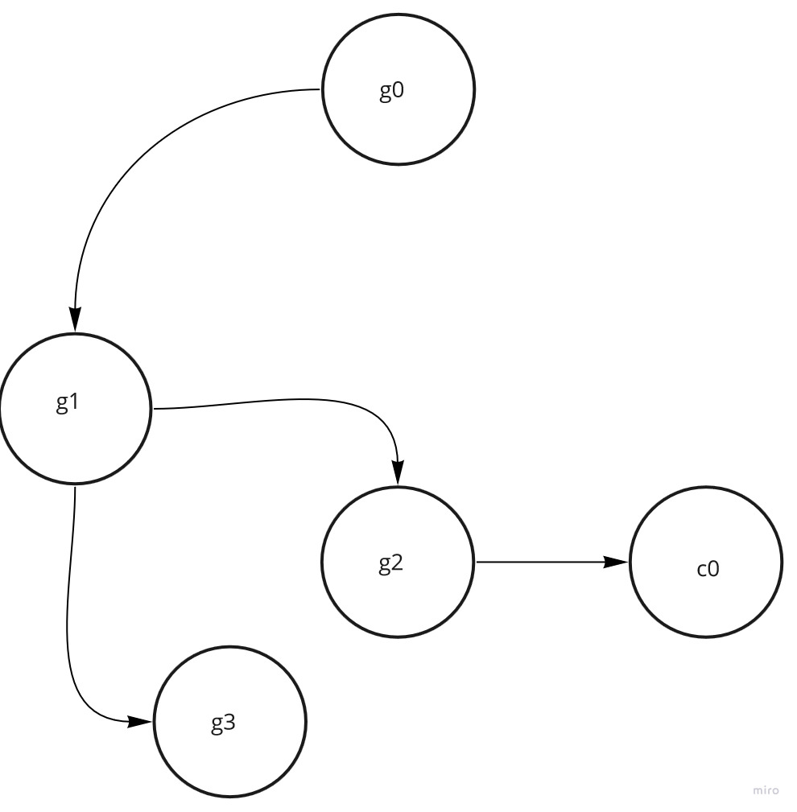
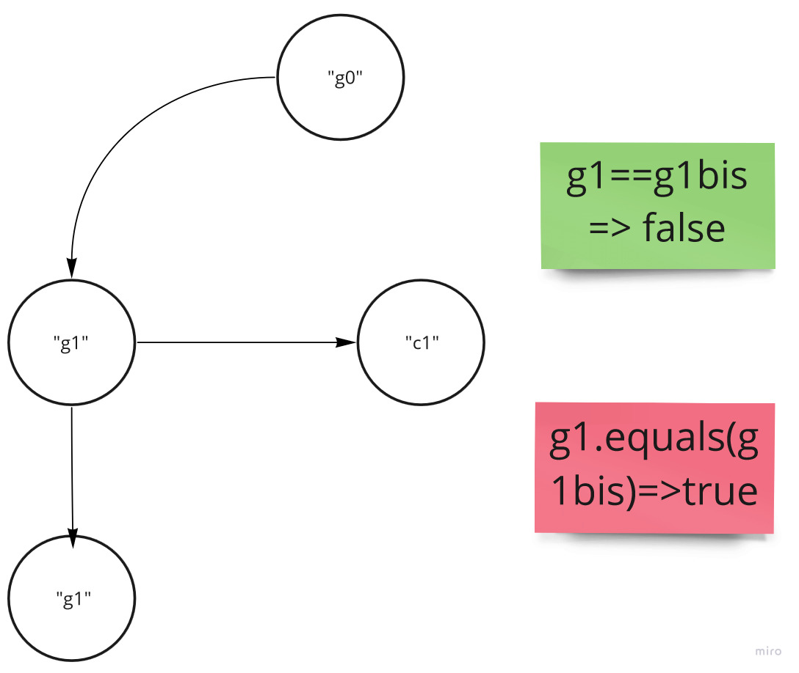
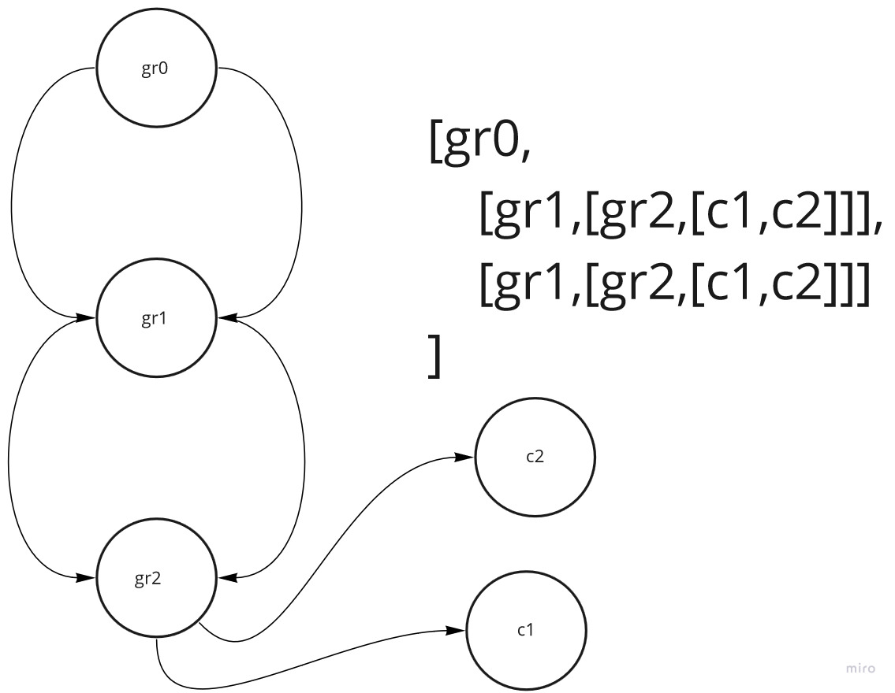

| Nom | Juglaret |
| Pr�nom | Laure |
| Matricule | 0G5DRL8UNZ3 |
Les cotisants peuvent être des contributeurs(les feuilles du graphes, notées c),
ou bien des groupe de contributes(les noeuds du graphe notées g).
Le schéma ci-dessous est un exemple de graphe pouvant être généré.
J'ai choisi de prendre un exemple de Composite non valide (g3 n'a pas de contributeur), pour ne pas empiéter sur la question 2.1

public class Contributeur extends Cotisant{
private int solde;
public Contributeur(String nom, int somme){
super(nom);
if (somme < 0){
throw new RuntimeException("nombre n�gatif !!!");
}
solde = somme;
}
public int solde(){
return this.solde;
}
public int nombreDeCotisants(){
return 1;
}
public void debit(int somme) throws SoldeDebiteurException{
if (somme > solde){
throw new SoldeDebiteurException();
}
if (somme < 0){
throw new RuntimeException("nombre n�gatif !!!");
}
solde -= somme;
}
/**
* throws RuntimeException new RuntimeException("nombre n�gatif !!!");
*/
public void credit(int somme){
if (somme < 0){
throw new RuntimeException("nombre n�gatif !!!");
}
solde += somme;
}
/**
* throws RuntimeException new RuntimeException("nombre n�gatif !!!");
*/
public void affecterSolde(int somme){
if(somme < 0) throw new RuntimeException("nombre n�gatif !!!");
try{
debit(solde()); credit(somme);
}catch(SoldeDebiteurException sde){
this.solde = somme;
}
}
public T accepter(Visiteur visiteur){
return visiteur.visite(this);
}
public String toString(){
return "";
}
}
public class GroupeDeContributeurs extends Cotisant implements Iterable{
private List liste;
public GroupeDeContributeurs(String nomDuGroupe){
super(nomDuGroupe);
liste = new ArrayList<>();
}
/**
* ajoute un cotisant au groupe de contributeur
* @param cotisant
*/
public void ajouter(Cotisant cotisant){
assert cotisant!=null && cotisant.getParent()==null;
this.liste.add(cotisant);
cotisant.setParent(this);
}
/**
* calcule le nombre de cotisants
* @return int
*/
public int nombreDeCotisants(){
int nombre = 0;
for(Cotisant c : getChildren()) {
nombre += c.nombreDeCotisants();
}
return nombre;
}
/**
*
* @return String
*/
public String toString(){
String str = new String();
str+=nom();
for(Cotisant c : getChildren()) {
str += c.toString();
}
return str;
}
/**
* renvoie tous les enfants du groupe de contributeurs
* @return List
*/
public List getChildren(){
return this.liste;
}
/**
* retire somme à tous les cotisants du groupe de contributeurs
* @param somme
* @throws SoldeDebiteurException
*/
public void debit(int somme) throws SoldeDebiteurException{
for (Cotisant cotisant : getChildren()){
cotisant.debit(somme);
}
}
/**
* ajoute somme à tous les cotisants du groupe de contributeurs
* @param somme
*/
public void credit(int somme){
for (Cotisant cotisant : getChildren()){
cotisant.credit(somme);
}
}
/**
* calcule la solde totale
* @return int
*/
public int solde(){
int solde = 0;
for (Cotisant cotisant : getChildren()){
solde += cotisant.solde();
}
return solde;
}
Lors des tests sur le serveur j'ai eu cette erreur
testSurUnGroupeDeGroupeAvecDoublons(question2): Ce composite est valide, revoyez CompositeValide !!!
J'ai donc modifié la méthode public Boolean visite(GroupeDeContributeurs g){...}
pour ne plus utiliser contains (qui utilisait equals donc l'égalité sur les noms), mais == .


La visite d'un Contributeur est le cas de base.
Dans ce cas, on retourne l'évaluation de c.solde() >= valeur;
On parcoure tous les cotisant de g récursivement en retournant faux si un enfant n'est pas valide.
Avant le parcours de la liste des cotisants, il faut déterminer si la liste des enfants et non vide et qu'il n'y a pas de cycles.
public class CompositeValide implements Visiteur{
// Le solde de chaque contributeur doit �tre sup�rieur ou �gal � un nombre transmis en param�tre
// et il n�existe pas de groupe n�ayant pas de contributeurs.
// groupe de contributeurs : pas de cycle
private int valeur;
private Stack groupesDejaVus = new Stack();
public CompositeValide(int valeur){
this.valeur = valeur;
}
public CompositeValide(){
this(0);
}
/**
* visite un contributeur c, renvoie vrai si il est valide
* @param c
* @return Boolean
*/
public Boolean visite(Contributeur c){
return c.solde() >= valeur;
}
/**
* visite un contributeur g,renvoie vrai si il est valide
* @param g
* @return Boolean
*/
public Boolean visite(GroupeDeContributeurs g){
//pas vide et pas de cycles
if(g.getChildren().isEmpty() ){
return false;
}
for(GroupeDeContributeurs gr : groupesDejaVus ){
if (gr == g){
return false;
}
}
//se souvenir qu'on l a vu (pour �viter un cycle)
groupesDejaVus.push(g);
for (Cotisant cotisant : g.getChildren()){
Boolean enfantValide = cotisant.accepter(this);
if(!enfantValide){
groupesDejaVus.pop();
return false;
}
}
groupesDejaVus.pop();
return true;
}
}
La visite d'un Contributeur est le cas de base.
Dans ce cas, si le nom de c se trouve dans l'ensemble des noms déjà vu on retourne
faux, sinon on l'ajoute à l'ensemble et on retourne vrai.
On parcoure tous les cotisant de g récursivement en retournant faux si un enfant a des doublons.
Avant le parcours de la liste des cotisants, il faut déterminer si le nom du groupe est présent dans l'ensemble des noms déjà vus.
public class SansDoublon implements Visiteur{
private Set nomsDejaVus = new TreeSet();
/**
* visite un contributeur c, renvoie vrai si il n'a pas de doublons
* @param c
* @return Boolean
*/
public Boolean visite(Contributeur c){
if(nomsDejaVus.contains(c.nom())){
return false;
}
else {
nomsDejaVus.add(c.nom());
return true;
}
}
/**
* visite un contributeur c, renvoie vrai si il n'a pas de doublons
* @param c
* @return Boolean
*/
public Boolean visite(GroupeDeContributeurs g){
if(nomsDejaVus.contains(g.nom())){
return false;
}
else {
nomsDejaVus.add(g.nom());
}
for (Cotisant cotisant : g.getChildren()){
Boolean pasDeDoublons = cotisant.accepter(this);
if(!pasDeDoublons){
return false;
}
}
return true;
}
}
public Integer visite(Contributeur c){
return c.solde();
}
La visite d'un Groupe de contributeur est récursive.
public Integer visite(GroupeDeContributeurs g){
int minDesDebitsMaxs = Integer.MAX_VALUE;
for (Cotisant cotisant : g.getChildren()){
Integer enfantDebitMax = cotisant.accepter(this);
if(enfantDebitMax < minDesDebitsMaxs){
minDesDebitsMaxs = enfantDebitMax;
}
}
return minDesDebitsMaxs;
}
Pour le memento, le principe est le même que pour les trois visiteurs de la question 2 :
case Contributeur of
Contributeur contrib -> cas initial
GroupeDeContributeurs g -> recursion
Pour la sauvegarde j'ai utilisé une hashmap pour stocker les contributeurs et la valeur courante de leur solde.
Dans le cas initial, cette hashmap est vide et je lui ajoute la clé contributeur avec comme valeur le solde associé à ce contributeur.
Dans le cas GroupeDeContributeurs g, j'ajoute la paire (contributeur,contributeur.solde) récursivement.
Pour la restitution d'état :
Dans le cas initial, je verifie que le contributeur est dans la hashmap, si c'est le cas je lui affecte son ancien solde.
Dans le cas GroupeDeContributeurs g, je restitue l'état récursivement.
public class Memento {
private HashMap contributeurEtValeurDeSonCompte = new HashMap() ;
public Memento(Cotisant c) {
assert c!=null;
// sauvegarde
c.accepter(new Visiteur(){
public Void visite(Contributeur contrib){
contributeurEtValeurDeSonCompte.put(contrib,contrib.solde());
return null;
}
public Void visite(GroupeDeContributeurs g){
for (Cotisant cotisant : g.getChildren()){
cotisant.accepter(this);//this == Visiteur
}
return null;
}
});
}
public void setState(Cotisant c) {
assert c!=null;
// restitution
c.accepter(new Visiteur(){
public Void visite(Contributeur contrib){
//verifie que contrib est dans contributeurEtValeurDeSonCompte
if(contributeurEtValeurDeSonCompte.containsKey(contrib)){
int ancienSolde = contributeurEtValeurDeSonCompte.get(contrib);
contrib.affecterSolde(ancienSolde);
}
return null;
}
public Void visite(GroupeDeContributeurs g){
for (Cotisant cotisant : g.getChildren()){
cotisant.accepter(this);//this == Visiteur
}
return null;
}
});
}
}
Pour que la transaction "marche" j'ai mis à jour la méthode débit de la classe GroupeDeContributeurs (question1).
public void debit(int somme) throws SoldeDebiteurException{
Memento sauvegarde = new Memento(this);
try{
for (Cotisant cotisant : getChildren()){
cotisant.debit(somme);
}
}
catch(SoldeDebiteurException e){
sauvegarde.setState(this);
throw e;
}
}
public TransactionDebit(Cotisant cotisant){
super(cotisant);
this.gardien = new Gardien();
}
/**
* Commence une transaction
*/
public void beginTransaction(){
Memento instantane = new Memento(cotisant);
gardien.setMemento(instantane);
}
/**
* Commit
*/
public void endTransaction(){
gardien.getMemento();
}
/**
* Restitue l'état précédent
*/
public void rollbackTransaction(){
Memento instantane = gardien.getMemento();
instantane.setState(cotisant);
}
}
debiter.addActionListener(new ActionListener(){
public void actionPerformed(ActionEvent e){
AbstractTransaction transactionMoins = new TransactionDebit(g);
try{
transactionMoins.debit(Integer.parseInt(somme.getText()));
actualiser();
}
catch(NumberFormatException ex){}
catch (question1.SoldeDebiteurException sde){}
}
});
crediter.addActionListener(new ActionListener(){
public void actionPerformed(ActionEvent e){
g.credit(Integer.parseInt(somme.getText()));
actualiser();
}
});